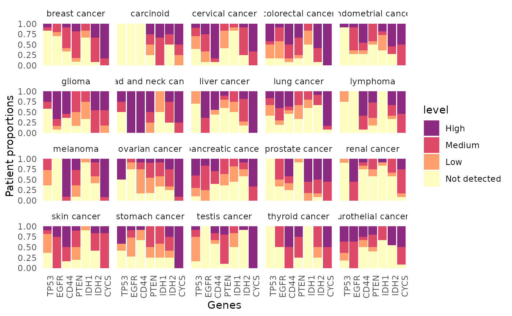

Visualize the expression of genes of interest in each cancer.
Usage
hpaVisPatho(
data = NULL,
targetGene = NULL,
targetCancer = NULL,
facetBy = "cancer",
color = c("#FCFDBF", "#FE9F6D", "#DE4968", "#8C2981"),
customTheme = FALSE
)Arguments
- data
Input the list object generated by
hpa_download()orhpa_subset(). Require thepathologydataset. Use HPA histology data (built-in) by default.- targetGene
Vector of strings of HGNC gene symbols. By default it is set to
c('TP53', 'EGFR', 'CD44', 'PTEN'). You can also mix HGNC gene symbols and ensemnl ids (start with ENSG) and they will be converted to HGNC gene symbols.- targetCancer
Vector of strings of normal tissues. The function will plot all available cancer by default.
- facetBy
Determine how multiple graphs would be faceted. Either
cancer(default) orgene.- color
Vector of 4 colors used to depict different expression levels.
- customTheme
Logical argument. If
TRUE, the function will return a barebone ggplot2 plot to be customized further.
Value
This function will return a ggplot2 plot object, which can be further modified if desirable. The pathology data is visualized as multiple bar graphs, one for each type of cancer. For each bar graph, x axis contains the inquired protein and y axis contains the proportion of patients.
See also
Other visualization functions:
hpaVis(),
hpaVisSubcell(),
hpaVisTissue()
Examples
data("hpa_histology_data")
geneList <- c('TP53', 'EGFR', 'CD44', 'PTEN', 'IDH1', 'IDH2', 'CYCS')
cancerList <- c('breast cancer', 'glioma', 'melanoma')
## A typical function call
hpaVisPatho(data=hpa_histology_data,
targetGene=geneList)
#> * WARNING: targetCancer variable not specified, visualize all.
#> >> Use hpaListParam() to list possible values for target variables.
